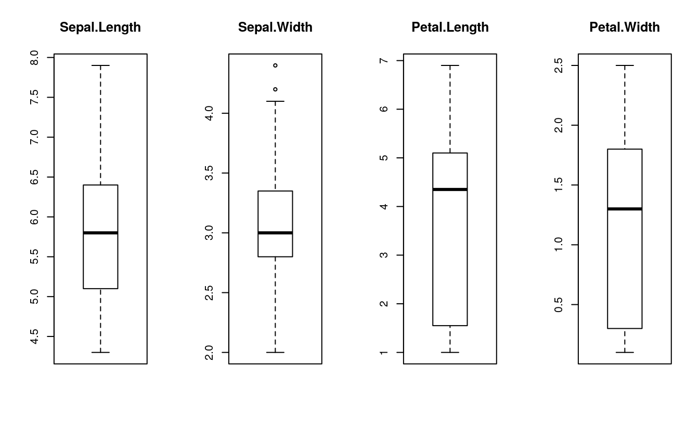
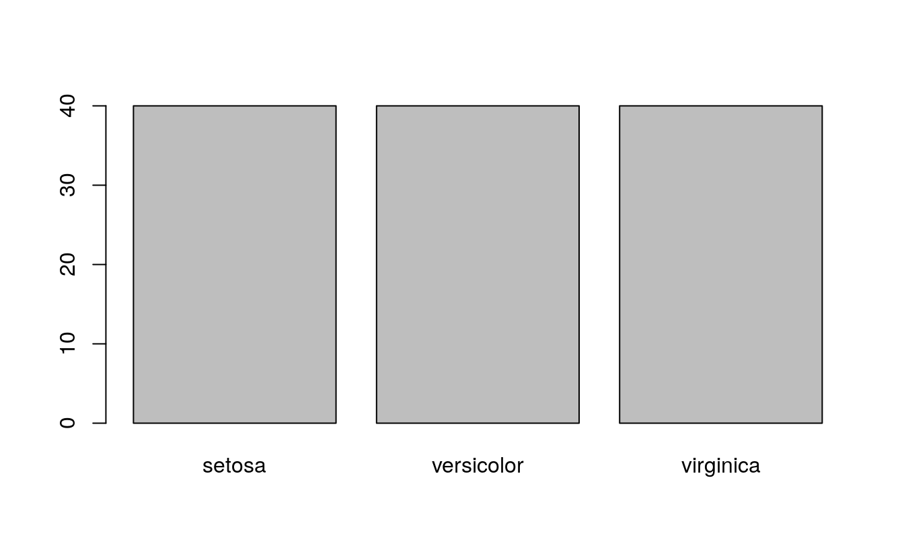
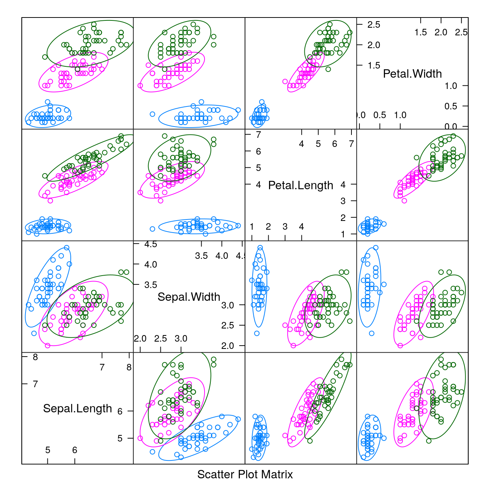
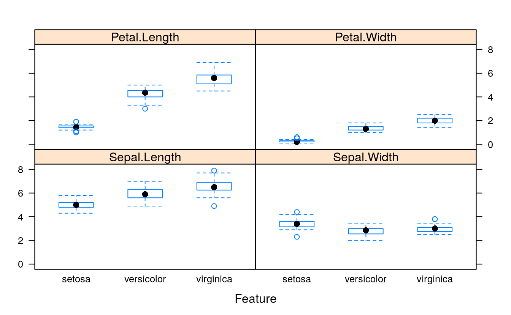
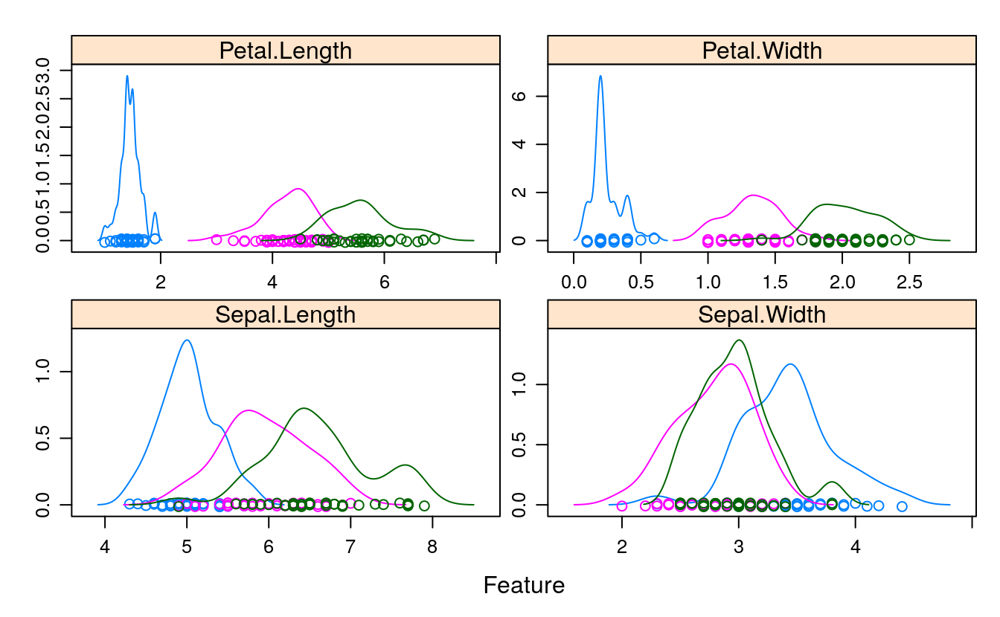
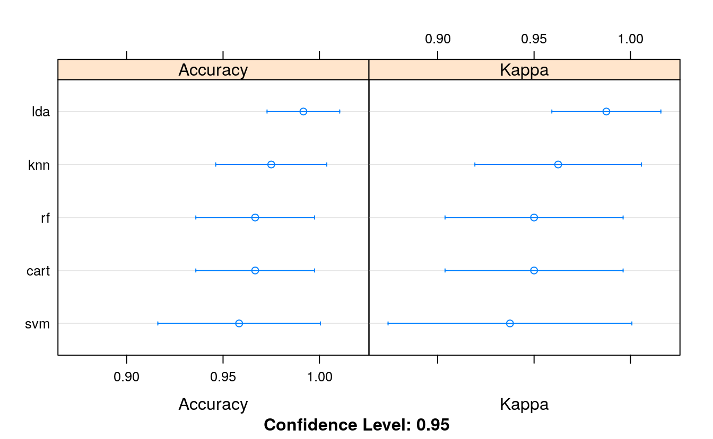

17 Comparing Classification algorithms
- Datasets:
iris - Algorithms: LDA, CART, KNN, SVM, RF
17.2 Workflow
- Load dataset
- Create train and test datasets, 80/20
- Inspect dataset
- Visualize features
- Set the train control to
- 10 cross-validations
- Metric: accuracy
- Train the models
- Compare accuracy of models
- Visual comparison
- Make predictions on
validationset
We will split the loaded dataset into two, \(80\%\) of which we will use to train our models and \(20\%\) that we will hold back as a validation dataset.
# create a list of 80% of the rows in the original dataset we can use for training
validationIndex <- createDataPartition(dataset$Species, p=0.80, list=FALSE)
# select 20% of the data for validation
validation <- dataset[-validationIndex,]
# use the remaining 80% of data to training and testing the models
dataset <- dataset[validationIndex,]
# dimensions of dataset
dim(dataset)
#> [1] 120 5
# list types for each attribute
sapply(dataset, class)
#> Sepal.Length Sepal.Width Petal.Length Petal.Width Species
#> "numeric" "numeric" "numeric" "numeric" "factor"17.3 Peek at the dataset
# take a peek at the first 5 rows of the data
head(dataset)
#> Sepal.Length Sepal.Width Petal.Length Petal.Width Species
#> 1 5.1 3.5 1.4 0.2 setosa
#> 2 4.9 3.0 1.4 0.2 setosa
#> 3 4.7 3.2 1.3 0.2 setosa
#> 4 4.6 3.1 1.5 0.2 setosa
#> 5 5.0 3.6 1.4 0.2 setosa
#> 6 5.4 3.9 1.7 0.4 setosa
library(dplyr)
#>
#> Attaching package: 'dplyr'
#> The following objects are masked from 'package:stats':
#>
#> filter, lag
#> The following objects are masked from 'package:base':
#>
#> intersect, setdiff, setequal, union
glimpse(dataset)
#> Rows: 120
#> Columns: 5
#> $ Sepal.Length <dbl> 5.1, 4.9, 4.7, 4.6, 5.0, 5.4, 4.6, 5.0, 4.4, 4.9, 5.4, 4…
#> $ Sepal.Width <dbl> 3.5, 3.0, 3.2, 3.1, 3.6, 3.9, 3.4, 3.4, 2.9, 3.1, 3.7, 3…
#> $ Petal.Length <dbl> 1.4, 1.4, 1.3, 1.5, 1.4, 1.7, 1.4, 1.5, 1.4, 1.5, 1.5, 1…
#> $ Petal.Width <dbl> 0.2, 0.2, 0.2, 0.2, 0.2, 0.4, 0.3, 0.2, 0.2, 0.1, 0.2, 0…
#> $ Species <fct> setosa, setosa, setosa, setosa, setosa, setosa, setosa, …
library(skimr)
print(skim(dataset))
#> ── Data Summary ────────────────────────
#> Values
#> Name dataset
#> Number of rows 120
#> Number of columns 5
#> _______________________
#> Column type frequency:
#> factor 1
#> numeric 4
#> ________________________
#> Group variables None
#>
#> ── Variable type: factor ───────────────────────────────────────────────────────
#> skim_variable n_missing complete_rate ordered n_unique
#> 1 Species 0 1 FALSE 3
#> top_counts
#> 1 set: 40, ver: 40, vir: 40
#>
#> ── Variable type: numeric ──────────────────────────────────────────────────────
#> skim_variable n_missing complete_rate mean sd p0 p25 p50 p75
#> 1 Sepal.Length 0 1 5.86 0.837 4.3 5.1 5.8 6.4
#> 2 Sepal.Width 0 1 3.06 0.437 2 2.8 3 3.32
#> 3 Petal.Length 0 1 3.76 1.78 1 1.58 4.35 5.1
#> 4 Petal.Width 0 1 1.20 0.759 0.1 0.3 1.3 1.8
#> p100 hist
#> 1 7.9 ▆▇▇▅▂
#> 2 4.4 ▁▆▇▂▁
#> 3 6.9 ▇▁▆▇▂
#> 4 2.5 ▇▁▆▅▃17.4 Levels of the class
# list the levels for the class
levels(dataset$Species)
#> [1] "setosa" "versicolor" "virginica"17.5 class distribution
# summarize the class distribution
percentage <- prop.table(table(dataset$Species)) * 100
cbind(freq=table(dataset$Species), percentage=percentage)
#> freq percentage
#> setosa 40 33.3
#> versicolor 40 33.3
#> virginica 40 33.317.6 Visualize the dataset
# split input and output
x <- dataset[,1:4]
y <- dataset[,5]
# boxplot for each attribute on one image
par(mfrow=c(1,4))
for(i in 1:4) {
boxplot(x[,i], main=names(dataset)[i])
}
# barplot for class breakdown
plot(y)
# scatter plot matrix
featurePlot(x=x, y=y, plot="ellipse")
# box and whisker plots for each attribute
featurePlot(x=x, y=y, plot="box")
# density plots for each attribute by class value
scales <- list(x=list(relation="free"), y=list(relation="free"))
featurePlot(x=x, y=y, plot="density", scales=scales)
17.7 Evaluate algorithms
17.7.1 split and metrics
# Run algorithms using 10-fold cross-validation
trainControl <- trainControl(method="cv", number=10)
metric <- "Accuracy"17.7.2 build models
# LDA
set.seed(7)
fit.lda <- train(Species~., data=dataset, method = "lda",
metric=metric, trControl=trainControl)
# CART
set.seed(7)
fit.cart <- train(Species~., data=dataset, method = "rpart",
metric=metric, trControl=trainControl)
# KNN
set.seed(7)
fit.knn <- train(Species~., data=dataset, method = "knn",
metric=metric, trControl=trainControl)
# SVM
set.seed(7)
fit.svm <- train(Species~., data=dataset, method = "svmRadial",
metric=metric, trControl=trainControl)
# Random Forest
set.seed(7)
fit.rf <- train(Species~., data=dataset, method = "rf",
metric=metric, trControl=trainControl)17.7.3 compare
#summarize accuracy of models
results <- resamples(list(lda = fit.lda,
cart = fit.cart,
knn = fit.knn,
svm = fit.svm,
rf = fit.rf))
summary(results)
#>
#> Call:
#> summary.resamples(object = results)
#>
#> Models: lda, cart, knn, svm, rf
#> Number of resamples: 10
#>
#> Accuracy
#> Min. 1st Qu. Median Mean 3rd Qu. Max. NA's
#> lda 0.917 1.000 1 0.992 1 1 0
#> cart 0.917 0.917 1 0.967 1 1 0
#> knn 0.917 0.938 1 0.975 1 1 0
#> svm 0.833 0.917 1 0.958 1 1 0
#> rf 0.917 0.917 1 0.967 1 1 0
#>
#> Kappa
#> Min. 1st Qu. Median Mean 3rd Qu. Max. NA's
#> lda 0.875 1.000 1 0.987 1 1 0
#> cart 0.875 0.875 1 0.950 1 1 0
#> knn 0.875 0.906 1 0.962 1 1 0
#> svm 0.750 0.875 1 0.937 1 1 0
#> rf 0.875 0.875 1 0.950 1 1 0
# compare accuracy of models
dotplot(results)
# summarize Best Model
print(fit.lda)
#> Linear Discriminant Analysis
#>
#> 120 samples
#> 4 predictor
#> 3 classes: 'setosa', 'versicolor', 'virginica'
#>
#> No pre-processing
#> Resampling: Cross-Validated (10 fold)
#> Summary of sample sizes: 108, 108, 108, 108, 108, 108, ...
#> Resampling results:
#>
#> Accuracy Kappa
#> 0.992 0.98717.8 Make predictions
# estimate skill of LDA on the validation dataset
predictions <- predict(fit.lda, validation)
confusionMatrix(predictions, validation$Species)
#> Confusion Matrix and Statistics
#>
#> Reference
#> Prediction setosa versicolor virginica
#> setosa 10 0 0
#> versicolor 0 9 1
#> virginica 0 1 9
#>
#> Overall Statistics
#>
#> Accuracy : 0.933
#> 95% CI : (0.779, 0.992)
#> No Information Rate : 0.333
#> P-Value [Acc > NIR] : 8.75e-12
#>
#> Kappa : 0.9
#>
#> Mcnemar's Test P-Value : NA
#>
#> Statistics by Class:
#>
#> Class: setosa Class: versicolor Class: virginica
#> Sensitivity 1.000 0.900 0.900
#> Specificity 1.000 0.950 0.950
#> Pos Pred Value 1.000 0.900 0.900
#> Neg Pred Value 1.000 0.950 0.950
#> Prevalence 0.333 0.333 0.333
#> Detection Rate 0.333 0.300 0.300
#> Detection Prevalence 0.333 0.333 0.333
#> Balanced Accuracy 1.000 0.925 0.925